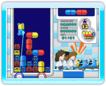
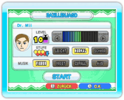

16 |
Bazillenjagd: Spielmodi
|
 |
 
An Bazillenjagd können bis zu vier Spieler gleichzeitig und kooperativ teilnehmen. Die Regeln sind mit denen des Klassisch-Modus von Dr. Mario identisch, aber zur Steuerung wird der Zeiger der Wii-Fernbedienung verwendet. Zeige während des Spiels auf eine Kapsel und drücke oder Wähle BAZILLENJAGD auf dem Modusauswahl-Bildschirm, um ein Spiel dieses Modus zu spielen. Der Bazillenjagd-Menübildschirm erscheint. Wähle START, um den Einstellungsbildschirm aufzurufen. Dort kannst du den LEVEL, die STUFE und die MUSIK festlegen. Wähle START, um das Spiel zu beginnen. Hinweis: Bei Bazillenjagd benötigt jeder Mitspieler eine Wii-Fernbedienung. |
 , um sie zu drehen. Willst du eine Kapsel bewegen, zeige darauf und halte einen der beiden Knöpfe gedrückt, während du sie zur gewünschten Stelle ziehst.
, um sie zu drehen. Willst du eine Kapsel bewegen, zeige darauf und halte einen der beiden Knöpfe gedrückt, während du sie zur gewünschten Stelle ziehst. |
 |
 |